|
|
HELP FIND THE FOLLOWING LOCATIONS
PAGE 7
THE SAINT: The Contract (Roger Moore: October 1964)Upper Phillimore Gardens, London W8 - Dunstan chases to Farnberg from Eileen Ballinger’s home to his waiting car, but one of his men intrceeds. Farnberg escapes in the car (7 Upper Phillimore Gardens).
(Identified by Sietse Postma, February 2024)
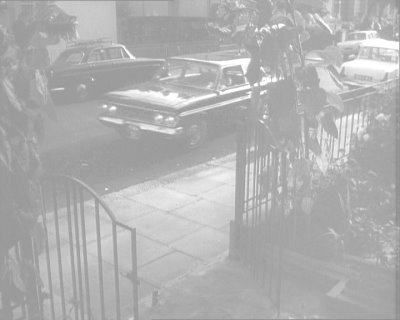
Unknown 1 - Simon drives Mrs Ballinger in his Volvo to a meeting at a pub with Dunstan.
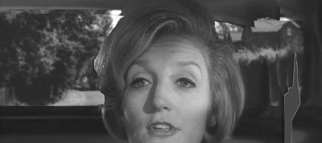
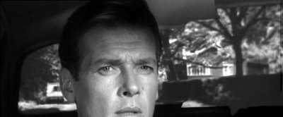
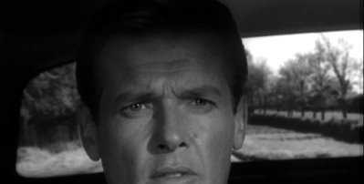
THE SAINT:
The Damsel in Distress
(Peter Yates: Aug/Sep 1964)
Palazzo Barbieri,
Verona, Italy
- Allesandro
and Simon Templar arrive in
Florence and take a taxi to see Guido.
(Identified by Pierre Alfonsi, May 2023)
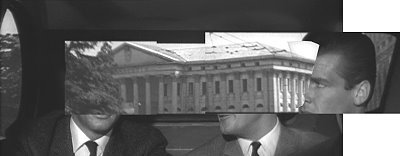
Unknown 1 - After taking a job as a chauffer for Guyiseppe Rolfieri,
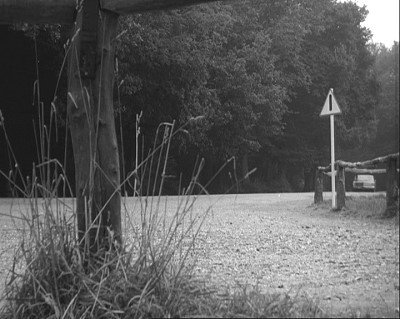
THE
SAINT: The Death Penalty (Jeremy Summers: April 1964)
Unknown 1
- Simon Templar is in Marseilles having his trye repaired at a garage.
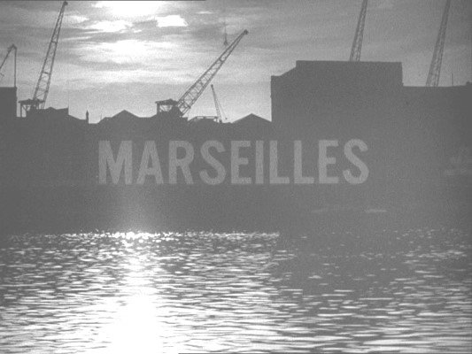
Charing Cross Station from The Queen's Walk, London, SE1 - Simon Templar, in Marseilles, is witness to a murder.*
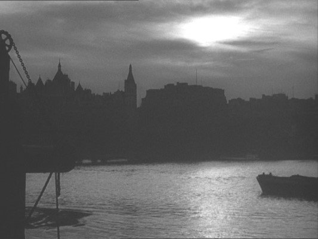
Unknown 2 - Toby and lauara driving in the hills above Marseilles..
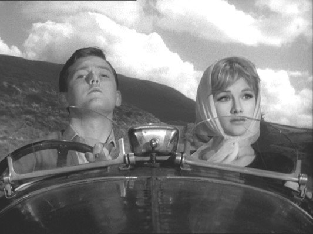
Unknown 3 - Simon Templar is driving above Marseilles in his Volvo when he sees Laura Stride limping home.
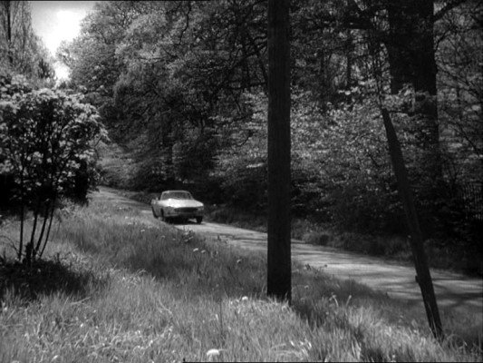
Unknown 4 - Abdul Osman's yacht is moored in the harbour of Marsellies.
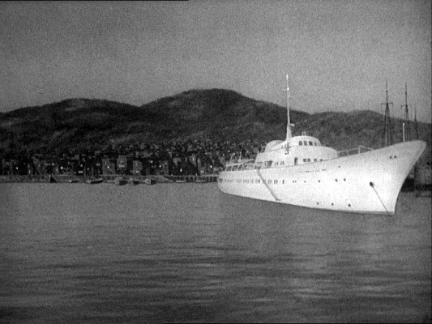
 This could be a modified photograph.
This could be a modified photograph.Unknown 5 - Abdul Osman takes Laura Stride for a night of fun in Marsellies.
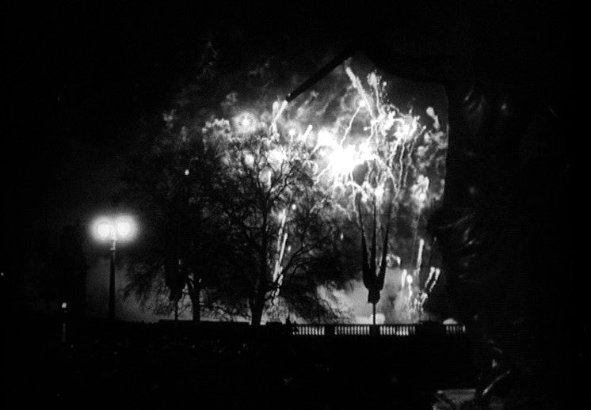
Unknown 6 - Galbraith Stride arrives for a meeting with Osman.
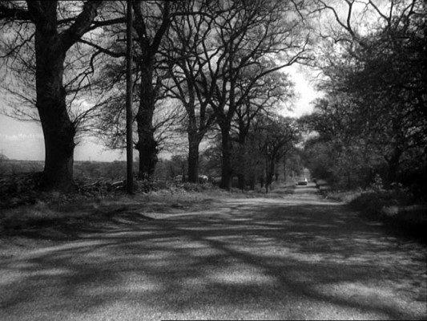
Unknown 7 - Simon Templer hides Toby Haildon in his motor boat on his way to Osman's yacht.
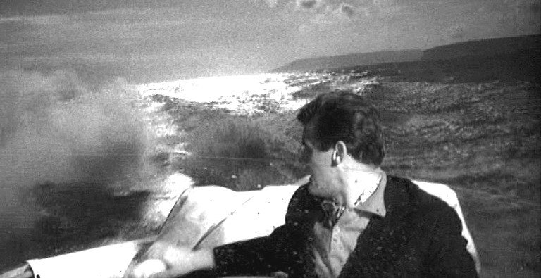
Think you know a spot? Need a bigger image? Email me.
< Previous | Index | Avengerland | Next >
Copyright © 2023 Anthony R. McKay